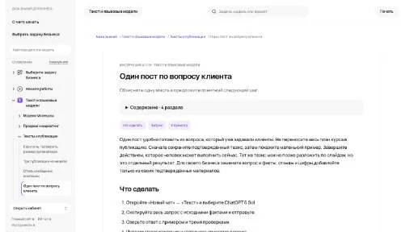
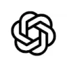
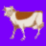

V
VoicefyСоздание контента
«Voicefy» получает речевую запись из текста.
Раздел «Создание контента»: варианты ИИ для этой задачи, описания возможностей и переходы к обзорам. Сравните несколько решений на одинаковом примере.
Подготовьте полезный пост из одного настоящего вопроса аудитории, используя собственные факты. Передайте ответ и небольшой пример; получите ясную публикацию с подходящим следующим действием, затем проверьте, не появились ли в ней придуманные отзывы или неподтверждённые свойства продукта.
Напиши пост по вопросу клиента: как хранить керамическую чашку, чтобы не повредить ручку. Используй мои рекомендации, добавь маленький пример размещения, не выдумывай отзывы и свойства материала.

«Voicefy» получает речевую запись из текста.
«AI Landing Page Builder» помогает собрать сайт или веб-приложение.
Buzzing AI помогает отвечать на запросы и готовить письменный контент: публикации для блога, короткие сообщения, коммерческие предложения и описания товаров. Для конкретного материала задайте адресата и фактическую основу. После генерации сравните обещания и характеристики продукта с брифом, затем адаптируйте длину под нужный канал.
Byword помогает готовить статьи и сопутствующие материалы с помощью ИИ. Пользователь задаёт желаемый объём и манеру письма, а также может создавать изображения и тексты для соцсетей. Платформа рассчитана на подготовку публикаций и связана с другими площадками для работы с контентом.
Сравнивать «Charisma» с другими инструментами раздела «Видео» удобнее на одинаковом исходном материале.
«ChatterBox» готовит визуальные материалы по заданию.
«ClipMaker» подготавливает короткие фрагменты видеозаписи. «ClipMaker» работает с текстом субтитров.
«D-ID Creative Reality Studio» подготавливает трёхмерные объекты. Дополнительно «D-ID Creative Reality Studio» создаёт портретные и аватарные изображения.
«Eleo» готовит визуальные материалы по заданию. «Eleo» также работает с графическими задачами дизайна.
«Free Poem Generator» готовит стихотворный текст по теме.
Сравнивать «GPT4TEXT BOT» с другими инструментами раздела «ИИ-ассистент» удобнее на одинаковом исходном материале.
«HeyMusic AI» подготавливает музыкальные варианты по заданию.
«Hypefury» готовит визуальные материалы по заданию. «Hypefury» также работает с материалами для социальных площадок.
«Komiko» помогает составлять визуальные панели комикса.
«LiveLink» создаёт видеоматериал по заданию. «LiveLink» помогает подготовить персонализированный видеоматериал.
«Monkey Writer» готовит текстовый черновик по условиям задачи.

OpenAI Sora используют для задачи: собирать видеосцену по описанию или визуальному исходнику. Ещё одно направление работы: готовить видеоматериалы для публикации.
Presentacium создаёт презентации по теме или загруженному тексту с участием ИИ. Российский сервис подбирает шаблоны и изображения, а также структурирует содержание слайдов. Встроенный редактор PPTX и экспорт в PDF или изображения дополняют работу, доступную через браузер на разных устройствах пользователя.
Quizwhiz формирует тестовые вопросы и ответы на основе предоставленного текста на английском. Для вопросов используются несколько вариантов ответа. ИИ-инструмент превращает исходный материал в проверочный формат, когда пользователь передаёт содержимое и получает задания, связанные с темой этого англоязычного текста.
«Rephrase» создаёт видеоматериал по заданию.
Для «Scale Catalog Forge» сначала определите свою задачу и требуемый результат. Карточка относится к направлению «Бизнес».
«Sora AI» создаёт видеоматериал по заданию. «Sora AI» также помогает подготовить персонализированный видеоматериал.
«Studio Neiro AI» готовит материал с говорящим персонажем.
Сравнивать «SuperChat» с другими инструментами раздела «Создание контента» удобнее на одинаковом исходном материале.
«Supergrow» представлен в разделе «Маркетинг». При выборе проверьте нужную операцию и условия работы с результатом.
Сравнивать «Videotap» с другими инструментами раздела «Создание контента» удобнее на одинаковом исходном материале.
«vverse AI» создаёт видеоматериал по заданию. «vverse AI» также помогает подготовить персонализированный видеоматериал.
ytRank AI помогает готовить поисковое оформление видео для YouTube. В наборе предусмотрены популярные ключевые слова, работа над SEO ролика и создание заголовков. Продукт ориентирован на подготовку этих текстовых элементов, соединяя исследование тем с представлением публикации, но не гарантируя определённый рост канала после размещения.
Сравнивать «Нейропродюсер» с другими инструментами раздела «Создание контента» удобнее на одинаковом исходном материале.
«Audie AI» помогает подготовить книжный материал.
«ChatGPR» работает с материалами для социальных площадок.
«ChatSonic» представлен в разделе «Чат-боты и ассистенты». При выборе проверьте нужную операцию и условия работы с результатом.
«CogVideoX-2B» подготавливает короткие фрагменты видеозаписи. Дополнительно «CogVideoX-2B» создаёт видеоматериал по заданию.
Ecrett Music создаёт музыкальные треки и предлагает настройку инструментальной структуры. Работа опирается на набор музыкальных заготовок, а использование результата связано с отдельными лицензионными условиями. Основной сценарий состоит в подготовке звучания под свой проект: состав инструментов меняется при выборе варианта, а права на публикацию проверяются отдельно.
Gamma помогает создавать презентации, документы и страницы из описания и исходных материалов. Перед оформлением важно выстроить аргумент, проверить данные и испытать экспорт.
«HitPaw AI Avatar» создаёт портретные и аватарные изображения. «HitPaw AI Avatar» готовит материал с говорящим персонажем.
«Korl» собирает материал для презентации.
MakeMyTale создаёт детские истории и книги с участием ИИ. Пользователи могут подготавливать собственные произведения, а жанровые категории помогают рассматривать разные направления рассказов. На платформе представлены обзоры, дополняющие выбор и работу над содержанием в рамках авторской подготовки детской книги.
Сравнивать «Photo Journey Ai» с другими инструментами раздела «Тексты и контент» удобнее на одинаковом исходном материале.
PixVerse предназначен для создания видеоматериала из запроса или изображения. Конкретное движение и обязательные детали сцены стоит обозначить заранее.
Сравнивать «PostNitro» с другими инструментами раздела «Создание контента» удобнее на одинаковом исходном материале.
«Promo AI» представлен в разделе «Email». При выборе проверьте нужную операцию и условия работы с результатом.

Сравнивать «Prompt Silo» с другими инструментами раздела «Создание контента» удобнее на одинаковом исходном материале.
«RE:Create Video» представлен в разделе «Создание контента». При выборе проверьте нужную операцию и условия работы с результатом.
«SmartEdit» помогает править исходный видеоматериал.
Сравнивать «Storynest AI» с другими инструментами раздела «Аудио (голос и музыка)» удобнее на одинаковом исходном материале.
Texta создаёт контент разных форматов с участием ИИ и поддерживает несколько языков. Интеграция с Zapier дополняет подготовку материалов в рабочем процессе. Пользователь может связывать выбранную текстовую задачу и язык публикации с действиями других инструментов в рамках доступного способа подключения.
Для «Tugan AI» сначала определите свою задачу и требуемый результат. Карточка относится к направлению «Маркетинг».
Страница 2 из 8